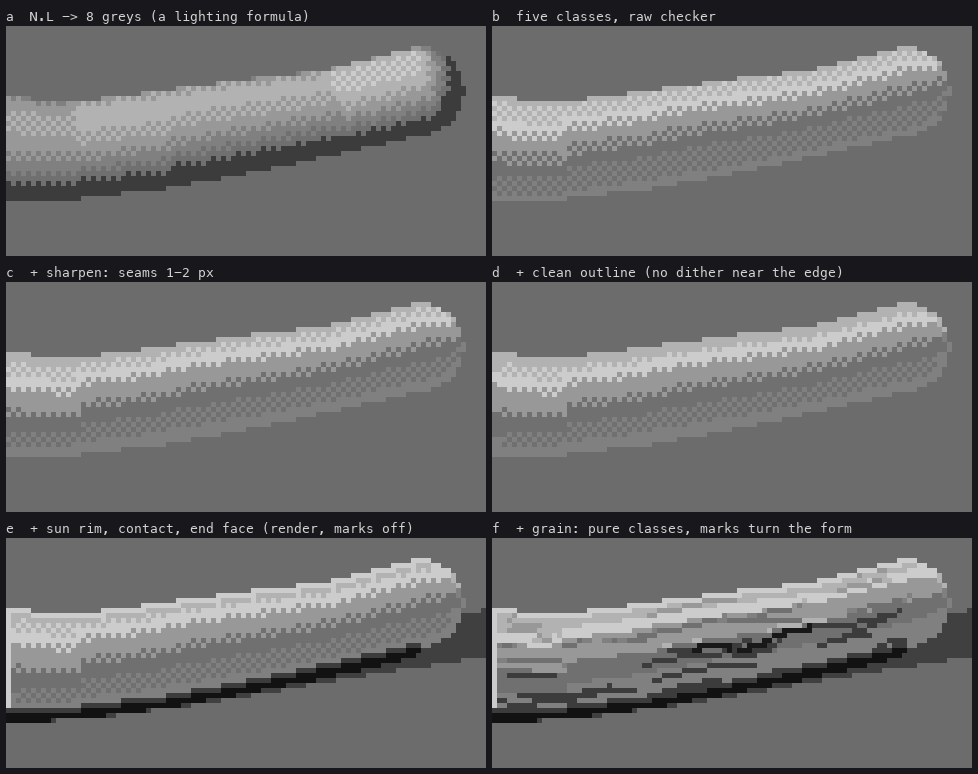
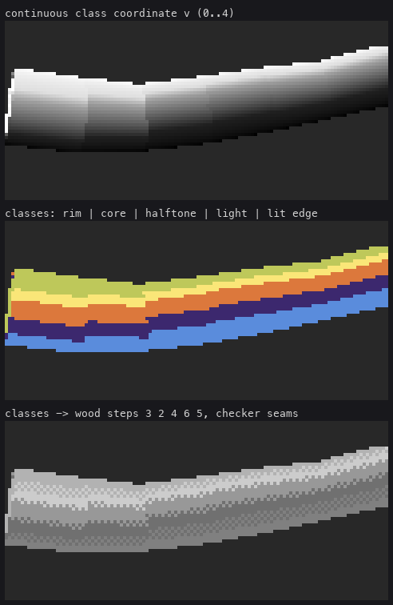
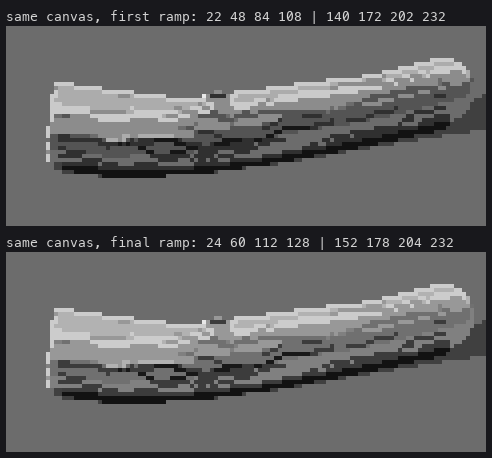
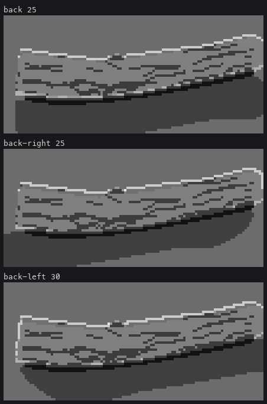
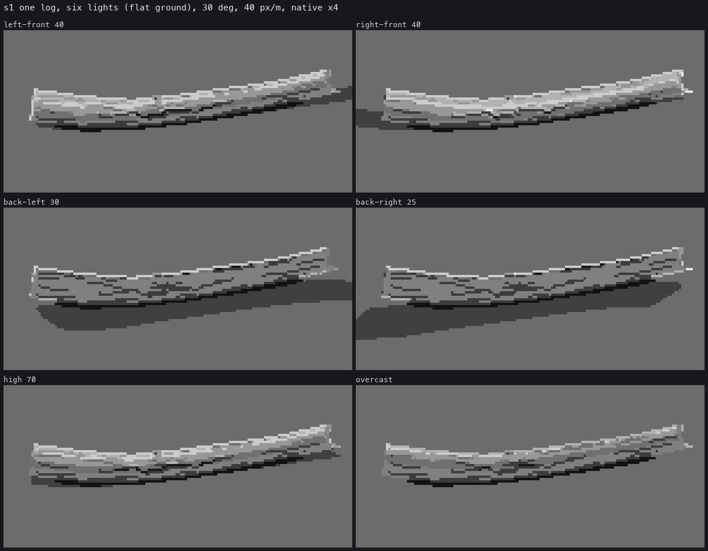

Trigger: any log, limb, stub or root at least about 4.5 px across, lying at any angle.
Lesson 1 fitted the five classes on an upright trunk. A log lies at any yaw on the ground, it bends, and its limbs point every which way, so the rule has to be measured round each pixel's own axis. After that, five small rules turn it from a CG tube into a Ferrari trunk.

One log at 55 px/m, left-front sun. (a) A lighting formula. (b–d) The classes, then sharpened seams, then a clean outline, computed by the same tech.* calls the renderer makes, stopped early. (e) The renderer with marks off. (f) The full renderer. Made by figs.py ablation.
The tracer (geo.trace) returns, for every wood pixel, the tangent T of the nearest primitive: a trunk segment, a stub, or a root. Log.local finds it:
# code/geo.py, Log.local (trimmed)
segs = [(self.pts[i], self.pts[i + 1], self.rad[i], self.rad[i + 1], self.cum[i], True)
for i in range(len(self.seglen))]
segs += [(a, b, r1, r2, -1.0, False) for (a, b, r1, r2, kind) in self.limbs]
for (a, b, r1, r2, s0, main) in segs:
...
dsurf = dax - rloc
if not main:
dsurf = dsurf + 1e-4 # ties go to the trunk
m = dsurf < best
...
TT = np.where(m[..., None], ax, TT)
RL = np.where(m, rloc, RL)
Then the renderer does exactly what the copy did, round T:
# code/render.py, render()
d, phL = tech.normal_plane_angles(buf['N'], V, light.L, buf['T'])
v = tech.cylinder_classes(d, phL, sh=sh)
Before limbs had their own tangents, stubs shaded as if they lay along the trunk: lit on the wrong side.

Ferrari's trunk spans about 55 grey levels. My first grey wood ramp was a textbook spread, and the same index canvas read as a dark pipe with a white stripe, because on a lying log seen from above, most of the visible side falls in the core class.

# code/render.py
GREY = {WOOD: [24, 60, 112, 128, 152, 178, 204, 232], ...}
# 0 1 2 3 | 4 5 6 7
# contact deep core rim | half edge light face
Steps 2–6 (the five classes) sit within 92 levels, and the light family starts only 24 above the rim. This is a palette change, not a form change. The index canvas is identical in both panels.
cylinder_classes is linear through every class, so on a 40-px log the checker bands come out 8 px wide (panel b). Ferrari's 6-px limbs have pure 1-px bands, and his 13-px trunk mixes over whole classes; wider forms don't scale the checker up. So the class fraction is steepened around each boundary, by a gain that grows away from 13 px in either direction:
# code/tech.py
def sharpen(v, diam_px, ref_px=13.0, max_gain=4.0):
dd = np.maximum(diam_px, 1e-3)
g = np.clip(np.maximum(ref_px / dd, dd / ref_px), 1.0, max_gain)
k = np.floor(v); f = v - k
return k + np.clip((f - 0.5) * g + 0.5, 0, 1)
diam_px comes from the tracer (2 * buf['rad'] * cam.scale), so a tapering log and its thin roots each get the right gain.
On a diagonal log, a checker seam that reaches the silhouette makes the lit top edge a regular two-tone sawtooth. The critic called it "the fastest mechanical tell in the image". Ferrari's outlines are clean runs of one tone; his seams sit inside the form.
# code/render.py, render()
sil = wood & nbr_out # pixels touching another object
near = wood & ndi.binary_dilation(sil, iterations=1)
kk = np.clip(np.round(v), 0, 4).astype(int)
st = np.where(near, tech.CLASS_STEPS[kk], st) # rounded, not dithered
# majority along the outline (window 7 px), per class
counts = np.stack([ndi.uniform_filter(((kk == c) & sil).astype(float), 7) for c in range(5)])
st = np.where(sil, tech.CLASS_STEPS[np.argmax(counts, 0)], st)
The difference between panels c and d is small in the figure, and that's the point: it's two rows of pixels. But those rows are the silhouette, and the silhouette is what reads first.
Where the lit plane meets whatever is behind it, Ferrari puts a 1-px light run: V02's maroon rim on the dead tree, and the lit edge on his c5 boulders. For a back-lit log it is all the light there is.
# code/render.py, render()
lx = light.L @ cam.r; ly = -(light.L @ cam.u) # the sun's direction on screen
sdx = int(np.sign(lx)) if abs(lx) > 0.35 else 0
sdy = int(np.sign(ly)) if abs(ly) > 0.35 else 0
edge = np.zeros_like(wood)
for ddy, ddx in ((sdy, 0), (0, sdx), (sdy, sdx)):
if ddy == 0 and ddx == 0:
continue
nb = np.roll(np.roll(obj, -ddy, 0), -ddx, 1)
tn = np.roll(np.roll(buf['t'], -ddy, 0), -ddx, 1)
edge |= wood & ((nb != obj) & ((nb < 0) | (tn > buf['t'] + 0.05)))
ndl0 = (buf['N'] * light.L).sum(-1)
rimlit = edge & (ndl0 > -0.15) # breaks only where the form turns from the light
st = np.where(rimlit, np.maximum(st, 6), st)

Two things made this rim continuous. It tests three neighbours toward the sun (x, y and the diagonal), not one. And it needs cast shadows free of acne (lesson 3): my first rim was a dashed line because alternate rim pixels shadowed themselves.
The class rule alone, clipped to the shadow side, only nudges shadowed wood down a class or two. The value break between a log and the one lying across it has to be a jump:
# code/render.py, render()
ndl_c = (buf['N'] * light.L).sum(-1)
st = np.where(wood & sh, np.where(ndl_c > 0.2, 2, 1), st)
Shadowed wood goes to the core tone (2), or deep shadow (1) where it also turns from the sun. The two families never touch.

These are the final renderer, with marks on: the classes are pure and the grain turns the form (lesson 6). The back-lit rims are continuous; compare the dashed version in lesson 3.
The limit. At 30–40 px across (panel f is 22 px), the five classes become wide flat plateaus. Ferrari would carry more structure at that size. That is on the critic's not-ready list.